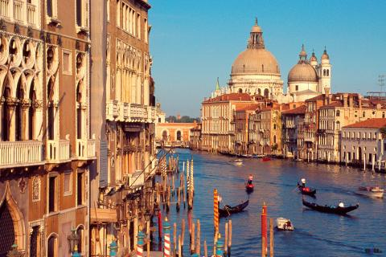
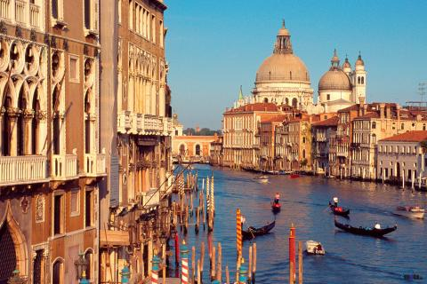
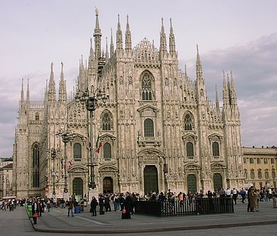
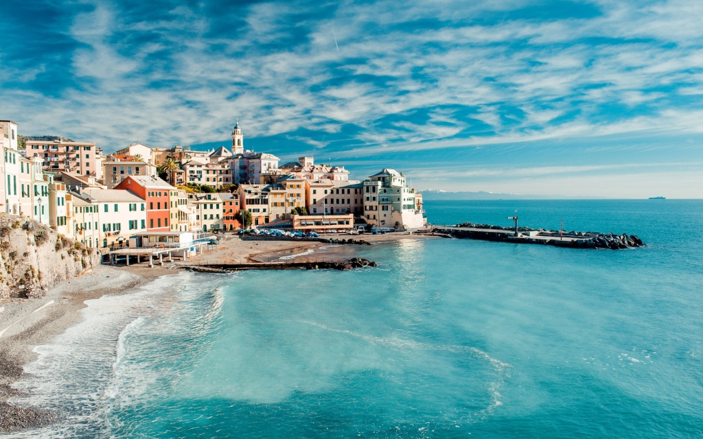
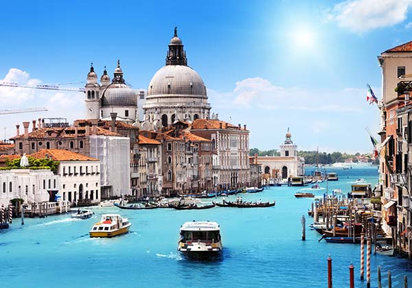
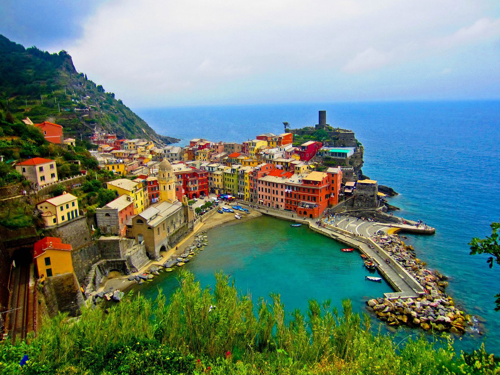

Italy, beautiful destination
With 50.7 million tourists a year (2015), Italy is the fifth most visited country in international tourism arrivals, and the sixth highest tourism earner in the world. Tourism is one of Italy's fastest growing and most profitable industrial sectors,
with an estimated revenue of €189.1 billion. People mainly visit Italy for its rich art, cuisine, history, fashion and culture, its beautiful coastline and beaches, its mountains, and priceless ancient monuments. The Roman Empire, Middle Ages,
and renaissance have left many cultural artifacts for the Italian tourist industry to use. Many northern cities are also able to use the Alps as an attraction for winter sports, while coastal southern cities have the Mediterranean Sea to draw
tourists looking for sun. Italy is also home to fifty UNESCO World Heritage Sites, the most in the world.
 

Rome is the third most visited city in Europe and the 14th in the world, with an average of 7-10 million tourists a year; the Colosseum (one of the world's most popular tourist attractions, with 4 million tourists) and the Vatican Museums (4.2
million tourists) are respectively the 39th and 37th most visited places in the world.Milan is the 7th EU's most important tourist destinations, and Italy's second, with 7.7 million arrivals. In addition to numerous tourist destinations, Milan
also has numerous hotels, including the ultra-luxurious Town House Galleria, which is the world's first seven-star hotel, ranked officially by the Société Générale de Surveillance, and one of The Leading Hotels of the World.


Venice has an average of 50,000 tourists a day (2007 estimate) and in 2006 it was the world's 28th most internationally visited city, with 2.927 million international arrivals that year. Other popular cities are: Pisa (home to the unmistakable
Leaning Tower), Florence (the city of Renaissance, and the home to Michelangelo's David), Genoa, Bologna, and Turin.Italy has some of the world's most ancient tourist resorts, dating back to the time of the Roman Republic, when destinations
such as Pompeii, Naples, Ischia, Capri and especially Baiae were popular with the rich of Roman society; Pompeii is currently Italy's third and the world's 48th most visited tourist destination, with over 2.5 million tourists a year.
Read more


France, if you want romantic holidays
With 83 million foreign tourists in 2012, France is ranked as the first tourist destination in the world, ahead of the US (67 million) and China (58 million). This 83 million figure excludes people staying less than 24 hours, such as North Europeans
crossing France on their way to Spain or Italy. It is third in income from tourism due to shorter duration of visits. France has 37 sites inscribed in UNESCO's World Heritage List and features cities of high cultural interest, beaches and
seaside resorts, ski resorts, and rural regions that many enjoy for their beauty and tranquillity (green tourism). Small and picturesque French villages are promoted through the association Les Plus Beaux Villages de France (litt. "The Most
Beautiful Villages of France"). The "Remarkable Gardens" label is a list of the over 200 gardens classified by the French Ministry of Culture. This label is intended to protect and promote remarkable gardens and parks. France attracts many
religious pilgrims on their way to St. James, or to Lourdes, a town in the Hautes-Pyrénées that hosts several million visitors a year. France, especially Paris, has some of the world's largest and renowned museums, including the Louvre, which
is the most visited art museum in the world, the Musée d'Orsay, mostly devoted to impressionism, and Beaubourg, dedicated to Contemporary art. Disneyland Paris is Europe's most popular theme park, with 15 million combined visitors to the resort's
Disneyland Park and Walt Disney Studios Park in 2009. With more than 10 millions tourists a year, the French Riviera (or Côte d'Azur), in south-east France, is the second leading tourist destination in the country, after the Paris region.
It benefits from 300 days of sunshine per year, 115 kilometres (71 mi) of coastline and beaches, 18 golf courses, 14 ski resorts and 3,000 restaurants. Each year the Côte d'Azur hosts 50% of the world's superyacht fleet. Another major destination
are the Châteaux of the Loire Valley, this World Heritage Site is noteworthy for its architectural heritage, in its historic towns but in particular its castles (châteaux), such as the Châteaux d'Amboise, de Chambord, d'Ussé, de Villandry
and Chenonceau. The most popular tourist sites include: (according to a 2003 ranking[184] visitors per year): Eiffel Tower (6.2 million), Louvre Museum (5.7 million), Palace of Versailles (2.8 million), Musée d'Orsay (2.1 million), Arc de
Triomphe (1.2 million), Centre Pompidou (1.2 million), Mont Saint-Michel (1 million), Château de Chambord (711,000), Sainte-Chapelle (683,000), Château du Haut-Kœnigsbourg (549,000), Puy de Dôme (500,000), Musée Picasso (441,000), Carcassonne
(362,000).Read more